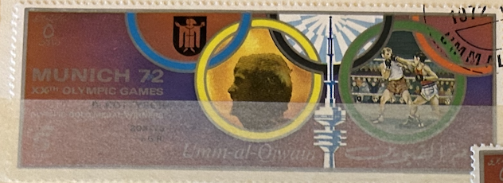
| SOURCE | TITLE| IMAGE MATCH | click to source page |
| www.ebay.com | UMM AL QIWAIN 1972 5r used NG Olympic Games Munich Discus ... |  |
| en.wikipedia.org | Knut Knudsen - Wikipedia | 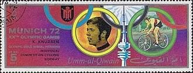 |
| commons.wikimedia.org | File:1972 stamp of Umm al-Quwain Klaus Wolfermann.jpg ... | 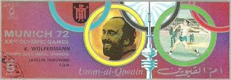 |
| www.ebay.com | Ajman 1972 MNH, Military Riding, R. Meade Olympic Gold ... | 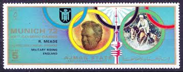 |
| www.owlsandbooks.co.uk | BOOK STAMPS UMM AL QIWAIN | 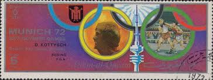 |
| boudewijnhuijgens.getarchive.net | 27 1972 summer olympics on stamps of umm al quwain Images ... | 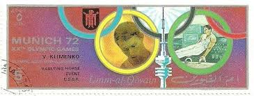 |
| picryl.com | 1972 stamp of Umm al-Quwain Randy Williams - PICRYL - Public ... | 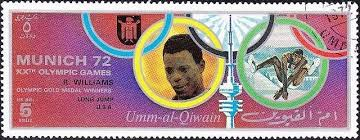 |
| www.hipstamp.com | Search "UAE Umm" / HipStamp | 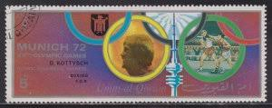 |
| en.wikipedia.org | Athletics at the 1972 Summer Olympics – Men's shot put ... | 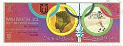 |
| oldthing.de | Umm al Kaiwain Mi.Nr. 717 I B Olympia.. | Briefmarken günstig | 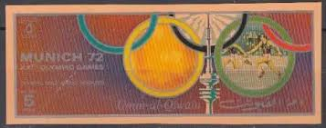 |
| commons.wikimedia.org | File:1972 stamp of Ajman Renate Stecher.jpg - Wikimedia Commons | 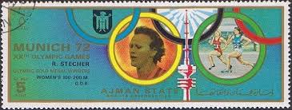 |
| commons.wikimedia.org | File:1972 stamp of Umm al-Quwain Dieter Kottysch.jpg ... | 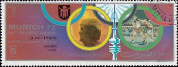 |
| www.alamy.com | The 1972 stamp from Ajman features a portrait of renowned ... |  |
| www.kitantik.com | UMM AL QIWAIN OLİMPİYAT 1972 - DAMGALI - Efemera - kitantik ... | 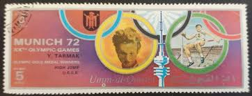 |
| www.ebay.com | Ajman 1972 Summer Olympic, Munich 1972, MNH, imperf. DELUXE ... | 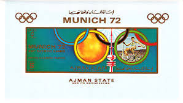 |
| www.dreamstime.com | Medals Serie Stock Photos - Free & Royalty-Free Stock Photos ... | 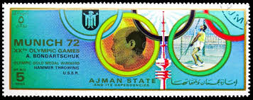 |
| www.lastdodo.com | Olympics 5 (1972) - Ajman - LastDodo |  |
| www.facebook.com | What are the prices of the three stamps? |  |
| www.shutterstock.com | 16+ Thousand Vintage Olympic Royalty-Free Images, Stock ... |  |
| market.yandex.ru | Катар марка "Победители Летних Олимпийских игр" 1972 года ... | 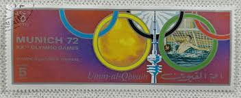 |
| www.alamy.com | Nadezhda chizhova hi-res stock photography and images - Alamy | 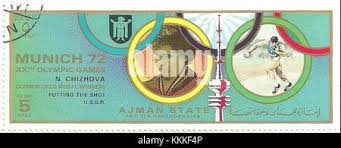 |
| en.wikipedia.org | File:1972 stamp of Ajman Graziano Mancinelli.jpg - Wikipedia |  |
| www.dreamstime.com | Gymnastics, Summer Olympic Games 1960 - Rome, Serie, Circa ... |  |
| www.leboncoin.fr | AJMAN timbre Jeux olympiques de Munich 1972 oblitéré ... | 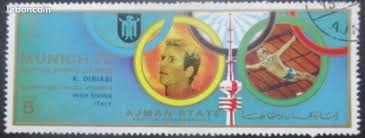 |
| www.leboncoin.fr | Lot de 5 timbres oblitérés JO Munich 1972 tbe umm al qiwain ... | 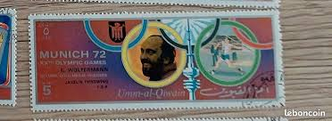 |
| commons.wikimedia.org | File:1972 stamp of Ajman A Bondarchuk.jpg - Wikimedia Commons |  |
| www.nadirkitap.com | Posta Pulu - 1972 - Umm al-Qiwain - 5 Riyal - Münih ... | 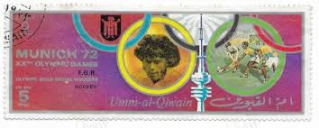 |
| oldthing.de | Umm al Kaiwain Mi.Nr. 726 I B Olympia.. | Briefmarken günstig | 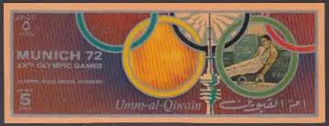 |
| aukro.cz | 35907 - 1972 - Mi. - č.k. 1599 / ** - Frank Shorter, USA ... | 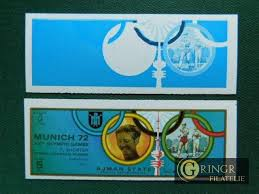 |
| www.alamy.com | Klaus wolfermann hi-res stock photography and images - Alamy | 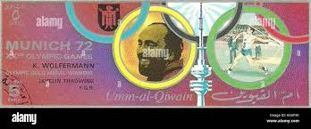 |
| www.mysticstamp.com | 1460 - 1972 6c 20th Summer Olympic Games - Mystic Stamp Company | 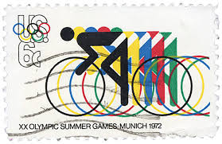 |
| www.pinterest.com | Ajman (05) 1972 Airmail - Olympic Games - Munich, Germany ... | 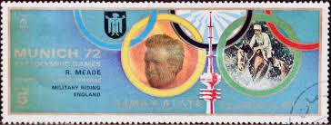 |
| www.shutterstock.com | Munich Stamp: Over 1,861 Royalty-Free Licensable Stock ... | 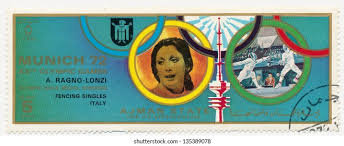 |
| www.ebay.com | FUJEIRA Munich Olympics Winners (Discus, Czechoslovakia) MNH ... |  |
| market.yandex.ru | Набор марок/блоков #286. Олимпиада 1972 г. Мюнхен. Спорт. 6 ... | 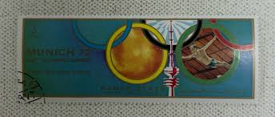 |
| en.wikipedia.org | Toyokazu Nomura - Wikipedia |  |
| www.facebook.com | For the Olympic Games in Munich, 1972, special cancelling ... | 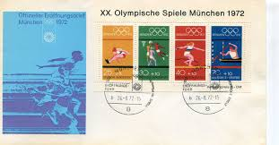 |
| www.mysticstamp.com | 1461 - 1972 8c 11th Winter Olympic Games - Mystic Stamp Company | 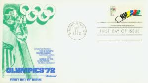 |
| www.alamy.com | Dieter kottysch hi-res stock photography and images - Alamy | 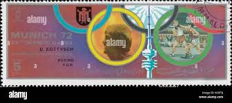 |
| www.cyclingranking.com | Knut Knudsen - #560 best all time pro cyclist ... | 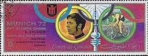 |
| www.ebay.com | FUJEIRA 1972 MUNICH 72' WINNERSMINT VF NH O.G S/S CTO (F5 ... | 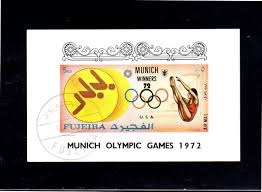 |
| aukro.cz | Zn.Emiráty sport, olympiáda Mnichov 72 | Aukro | 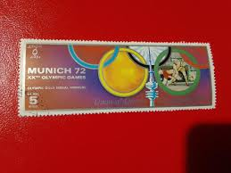 |
| en.wikipedia.org | Hideaki Yanagida - Wikipedia | 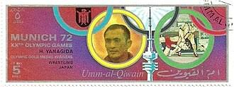 |
| www.freestampcatalogue.com | Stamps from the year 1972 with the theme Olympic Games ... | 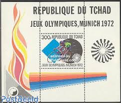 |
| postermuseum.com | Olympische Spiele München 1972 Jones – Poster Museum | 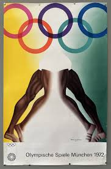 |
| postalmuseum.si.edu | Olympics | National Postal Museum | 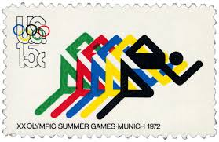 |
| www.rarepuzzles.com | 200, Trim, Stockholm 1912 - Rare Puzzles | 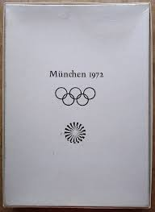 |
| aicolympic.org | 150 - Václav Slavík- Panorama of the olympic history - AICO | 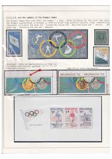 |
| www.etsy.com | 1972 Munich Germany Olympics 925 Sterling Silver ... | 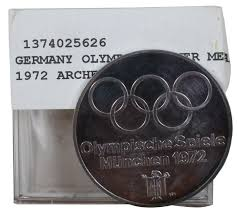 |
| www.midstory.org | The Tragedy Behind Detroit's Nine Failed Olympic Bids - Midstory | 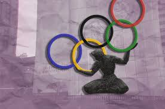 |
| www.instagram.com | Anything that matters in this life is earned in every last ... | 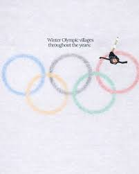 |
| www.lastdodo.com | Olympic Games 5 (1972) - Umm al-Qaiwain - LastDodo | 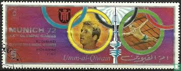 |
| www.pinterest.com | 1stdibs Posters - Vintage Poster Moscow Olympic Games Flame ... | 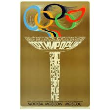 |
| www.drkenp.com | Astronomy - History - Philately - Curiosity : April 2021 | 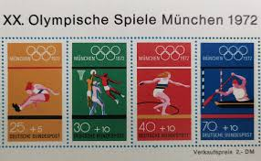 |
| postermuseum.com | Munich 1972 Olympic Games Equestrian Poster – Poster Museum | 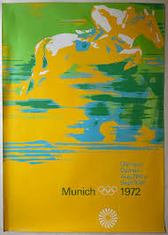 |
| printedoriginals.com | Shop 1988 Winter Olympic Games Calgary Original Vintage Poster | 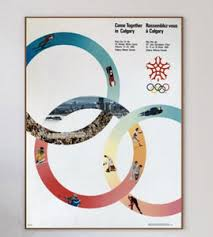 |
| www.mysticstamp.com | 1695-98 - 1976 13c Olympic Games - Mystic Stamp Company | 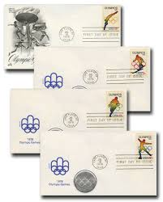 |
| www.runningpast.com | Running Past - Profiles - Billy Mills | 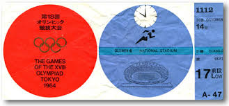 |
| fishinkblog.com | Olympic Posters and Stamps. | | 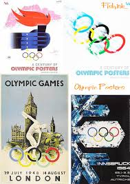 |
{kind=link}
{kind=link}
{kind=link}